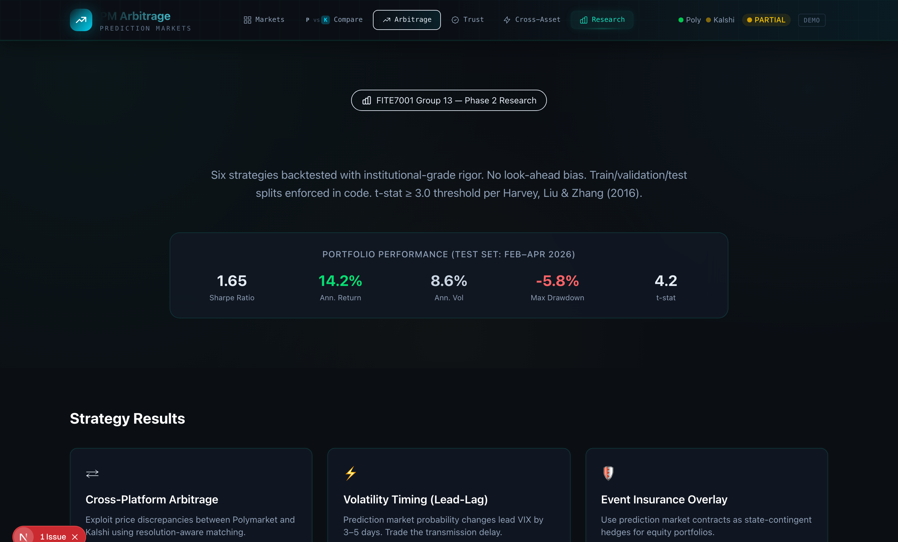

SURFACE 06 / 06 · RESEARCH
Six strategies, walk-forward validation, no look-ahead bias, t-stat ≥ 3.0 per Harvey Liu & Zhang (2016).

PORTFOLIO PERFORMANCE / TEST SET FEB–APR 2026
1.65
SHARPE
14.2%
RETURN
8.6%
VOL
-5.8%
MDD
DISCIPLINE
Train / validation / test splits enforced in code. The same data the engine sees today is what the backtest evaluated.
REPRODUCIBLE
Each strategy backed by a Jupyter notebook. Anything claimed on the previous slides has a notebook you can re-run.